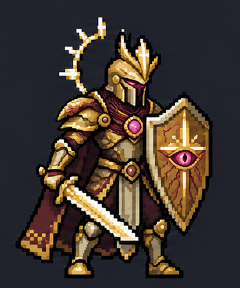

Exiles Defense · Étude de mouvementStrazhar à quatre pattes
Cinq propositions, chacune animée dans les huit directions sur le terrain du jeu. Les deux poings prennent appui ensemble, puis les deux pieds. Épée rangée, bouclier fixé à l’avant-bras.

Modèle initial conservé à côté des animations pour comparer le casque, les proportions, les couleurs et l’équipement.